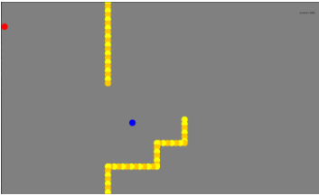
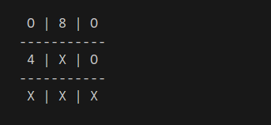
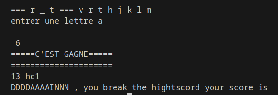
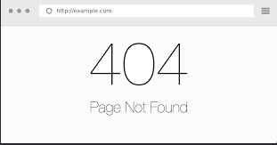

Le snake

Le morpion

Le pendu

Pierre Feuille Ciseaux

Coordonnées
maxime.parisi@epitech.eu
- 06.52.31.73.20
- 14 Avenue Pierre Loti 06000 Nice
Compétences
- Programmation : HTML, CSS, JAVASCRIPT, JAVA.
- Logiciels comptables : QuadraOndemand ,NeoExpert, QuadraBox,
- Comptabilité : enregistrement de factures, Révision, établissement Bilan/Compte de résultat.
- Fiscalité : Déclaration TVA (CA3/CA12),
- Gestion : Calcul des coûts
Langues
- Francais (langue maternelle)
- Anglais (niveau B2)
- Espagnol (niveau B1)
Hobbys
- Sport : Fhun Boxe , Street Work Out